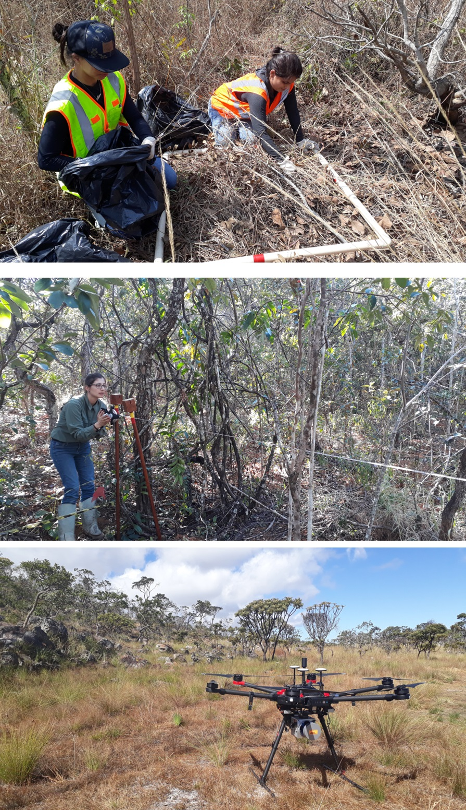
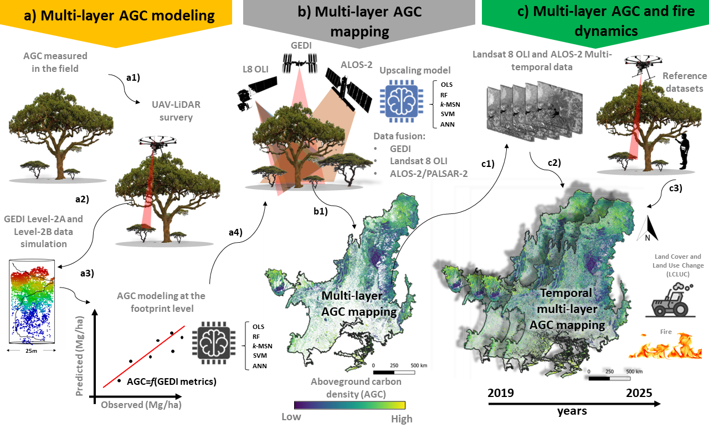
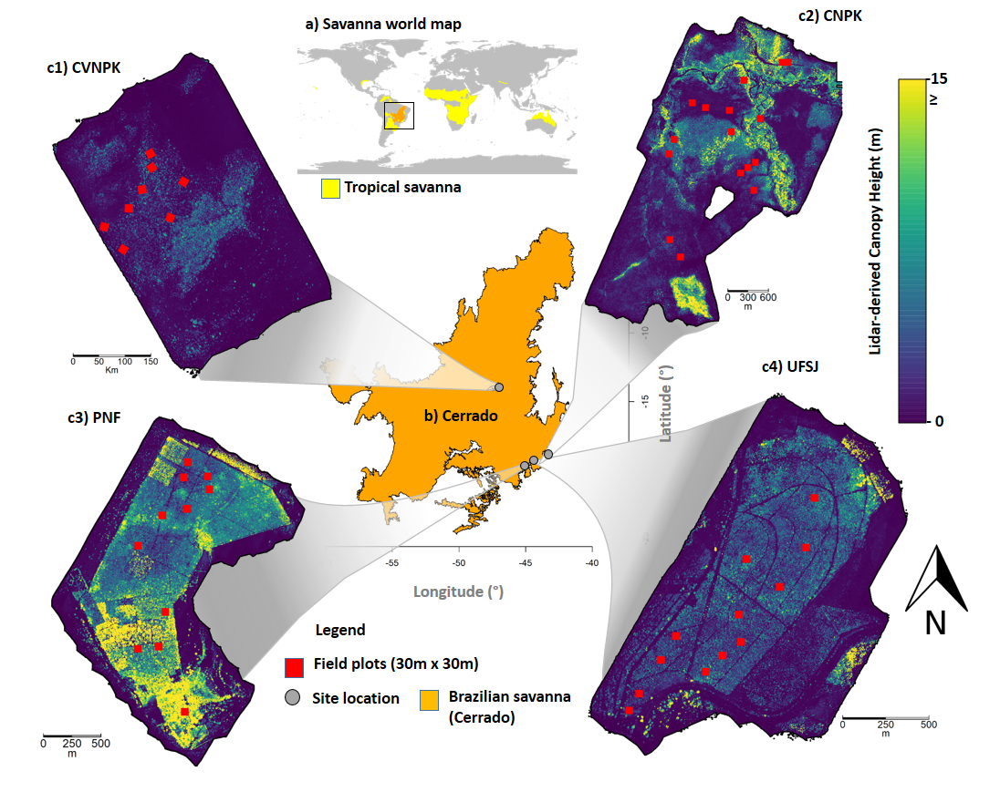
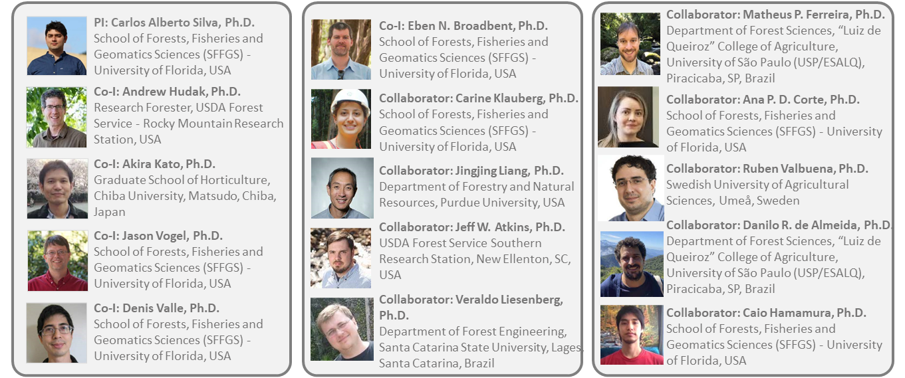

1. OverviewTropical savanna ecosystems play a major role in the global carbon budget, however, their ability to store and sequester carbon, and the combined impacts of fire regimes and vegetation dynamics on these systems, are uncertain due to anthropogenic activities and climate change. The development of an open-source multi-scale data fusion, prototype carbon monitoring system (CMS), for accurately mapping tropical savanna aboveground carbon (AGC) over broad spatial scales and time spans (4D) is crucial for monitoring vegetation and fire interactions as well as for understanding the role of fire in the carbon cycle in these ecosystems. New sensors onboard the International Space Station (ISS) such as Global Ecosystem Dynamics Investigation (GEDI), provide new opportunities to monitor AGC and ecosystem status globally. However, to date, little is known about the capability of GEDI alone or combined with optical [e.g. Landsat OLI 8 (L8)] and microwave data [e.g. ALOS-2/PALSAR-2], for wall-to-wall multi-layer AGC mapping and monitoring in tropical savanna ecosystems from space at high spatial and temporal resolutions. This project is focused on the Brazilian tropical Savanna (Cerrado) as it is one of the most biodiverse ecosystems in the world and also one of the most threatened. The overall objective of this project is to develop an open-source multi-scale data fusion, prototype carbon monitoring system (CMS), for 4D (space-time; CMS4D) wall-to-wall multi-layer AGC dynamics mapping and monitoring in the Cerrado. Herein, we propose four specific objectives (O), as follows:
The project accesses and responds to stakeholder needs through its partnering with several entities in Brazil,
including Embrapa, ICMBio, Araguaia Institute and Timber industry. Our project will deliver geospatially explicit, methodologically consistent, and transparent AGCs, AGCc and AGCt maps with uncertainty estimates in Cerrado. Overall, the prototype CMS from this project will enable the full use of cutting-edge remote sensing datasets to monitor AGC dynamics, better understand vegetation and fire interactions in the Cerrado, and assist in its sustainable conservation and management into the future. |

Figure 1. Photos collected during field work. Destructive fuel sampling (top), forest invetory (middle) and UAV-LiDAR data acquistion (bottom). |
The prototype CMS is divided into three sections; each section is targed to address one or more of our four proposed objectives. First, field and simulated GEDI data are related at the footprint level (~25 m diameter) for deriving a new set of models for estimating AGC from GEDI data (objective #1) (a), and therefore improve total AGC estimation in Cerrado. Second, GEDI-derived AGC estimates are combined with Landsat 8 OLI or ALOS-2/PALSAR-2 for wall-to-wall mapping multi-layer vegetation AGC across the biome (b) (objective #2). Third, models developed in the previous step are applied across time and space for monitoring multi-layer AGC dynamics and fire interactions from 2019 to 2025 and to support stakeholders on integrated fire management activities in Cerrado (objective #3-4) (c).
Figure 2. Flowchart of proposed prototype CMS; a) Multi-layer AGC modeling at footprint level (~25m): AGC measurements and UAV-lidar data acquisition a1); GEDI data simulation a2) and AGC modeling a3); b) AGC mapping using GEDI integrated with L8 and ALOS-2 (b1); c) multi-layer AGC and fire dynamics monitoring: multitemporal L8 and ALOS-2 data acquisition c1); AGC, LCLUC and fire burned area mapping c2); and validation of AGC temporal multi-layer AGC maps using field and UAV-lidar products c3).
Serra do Cipó National Park - SCNPK
SCNPK (19°12'-34'S, 43°27'-38'W) is located in the southeast portion of the Cerrado biome, state of Minas Gerais. The vegetation in SCNPK varies and comprises different physiognomies, from open grasslands (“Campo Limpo”) at altitudes below 1,000 m to savanna formations with different proportions of woody cover (“Campo Sujo”, “Campo Cerrado” and “Cerrado sensu stricto”) and forest formations (“Cerradão”), all classified as part of the Cerrado sensu lato; above 1,000 m are found the rupestrian grasslands. Chapada dos Veadeiros National Park - CVNPKThe CVNPK (13°51'-14°10'S, 47°25'-42'W) encompasses five municipalities in the state of Goiás, Brazil. Within a mountainous region, the altitude in CVNPK ranges from 620 to 1,700 m a.s.l., and the climate is characterized as tropical and sub-humid (AW). The landscape is formed by mosaics of different vegetation types characterized by a predominance of forest formations at low elevations and Cerrado with montane savannas at high elevations (Felfili et al. 2007). Wet and dry grasslands and savannas occur in between streams, covering most of the landscape. At the northwest edge of the park, dry deciduous forests are found, whereas at the southwest edge riparian evergreen forests are most common. In total, the CVNPK presents 77% of savanna formation, and about 10% corresponds to the forest fragments. Paraopeba National Forest - PNF Park - CVNPKThe PNF (19° 20'S and 44° 20'W) is located in the municipality of Paraopeba, state of Minas Gerais, Brazil. It is comprised of 150 ha remnants of Cerrado vegetation, including both savanna (e.g. Cerrado sensu stricto) and forest formations (e.g.Cerradão). University of São João Del-Rei's Forest - UFSJThe UFSJ forest (19°28'S, 44°11'W) is located in the Sete Lagoas municipality, state of Minas Gerais, Brazil, at an altitude a.s.l. that ranges from 742 to 815 m. The predominant vegetation type is Cerrado sensu stricto characterized by the dominance of trees with scattered shrubs and grass understorey. The climate is of the humid subtropical type, with a dry winter and moderately hot summer. |

Figure 3. Map of the UAV-LiDAR-derived vegetation height within the study area in the Brazilian Cerrado. Serra do Cipó National Park (SCNPK), Chapada dos Veadeiros National Park (CVNPK), Paraopeba National Forest (PNF), and University of São João. ao Del-Rei's Forest (UFSJ) |
We have brought together a diverse multi-disciplinary team with the experience required to complete this proposed project. Our team contains university and federal scientists and graduate students distributed across continents with a wealth of experience in remote sensing, fire and fuel ecology, programming and statistics.
